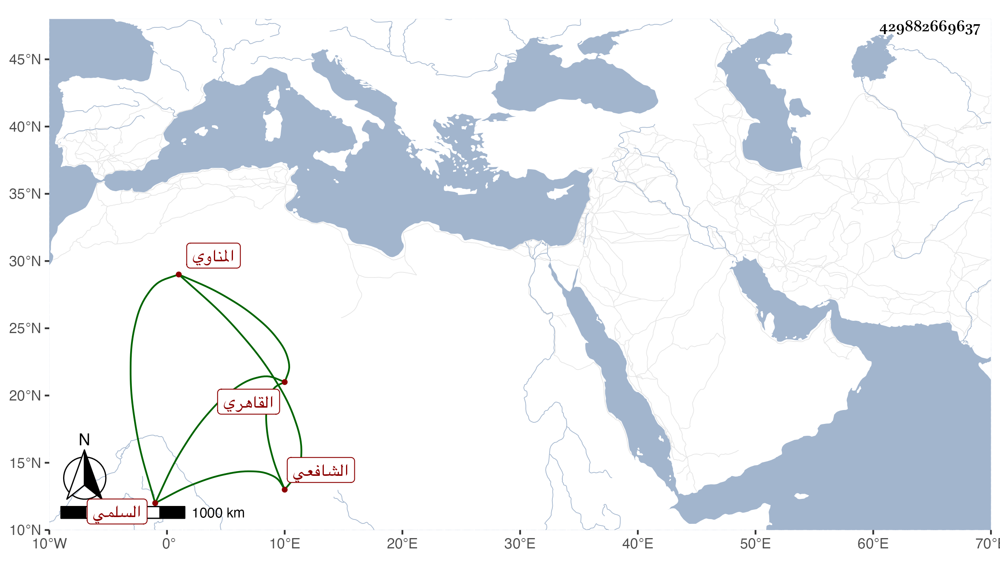

0902Sakhawi.DawLamic.ITO20230111-ara1.EIS1600.429882669637
Biography ID: 429882669637
348
محمد بن عثمان بن محمد بن إسحق بن إبراهيم البدر بن الفخر بن التاج السلمي المناوي ثم القاهري الشافعي أخو البهاء أحمد الماضي ، استقر شريكا له بعد موت أبيهما في تداريسه ورأيت بخطه أنه يروي عن ابن عم والده الصدر المناوي . والظاهر أنه من أهل هذا القرن ثم رأيت من عرض عليه سنة ثلاث وثمانمائة .
